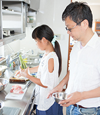

10年ほど前、料理家、タカコナカムラ先生のキッチンスタジオを取材で訪れた際、キッチンがすべてステンレス製だったのが印象的でした。次第に、オールステンレスのプロの厨房のようなキッチンに憧れるようになりました。今年の春、クリナップのショールームでS.S.に初対面。「これだ！」と即決しました。男性なら同じお金を車にかける人も多いかもしれませんが、僕はキッチンにお金をかけたい。だって、キッチンは 毎日の暮らしに必要なもの。質の高いキッチンならば一生ものですからね。
普段は娘が料理をしている横で、僕が道具や鍋を洗ったり、片付けをしたりしていますが、S.S.を使ってみて驚いたのは、掃除のしやすさ。美コートには驚きました。ワークトップは布巾でさっと拭くだけできれいになるし、シンクも汚れがこびりつかないので、料理の効率がよくなりました。娘が天ぷらにハマって頻繁に揚げ物をしていたときも、油汚れは全く問題なし。気になる換気扇の掃除も、洗エールレンジフードは ボタンひとつできれいになるので、苦になりません。汚れたらサインが出るので、こまめに掃除できているのもありがたいところです。
収納力が素晴らしいです。オートムーブシステムを二つ（二種類）付けているんですが、水切り棚部分は洗ったものをどんどん上に置いていけるから、ワークトップとシンクはいつもすっきり。以前は洗った器を置く場所もなく、すぐに拭いて、しまって、と忙しかったんです。足元まで引出し になっているフロアコンテナにも感動。重い鍋を重ねずにゆったり入れられて使いやすいし、空間に無駄がないのもいいですね。また、食器棚も同シリーズのシステムエリア収納に変えたら、付属のステップコンテナ（踏み台式収納）を使って天井近くまで収納できるので、今までは入りきらなかったものを収納でき、キッチン空間が広々！ 娘も僕も大満足です。
子どもが台所に立つことは、“生きる力”を身に着けることにつながると思っています。妻は娘が４歳のときに料理を教え始めました。娘は寝る前に昆布を水に浸けておき、朝起きたらすぐに弱火にかけて出汁をとります。その間に身支度をしたり、ごはんを炊いたり。そういった生きていくために必要な『段取り』についても、キッチンでは自然に教えられます。また共同で作業をしていると、「今日は口数が少ないな。何かあったのかな」とか、なんとなく様子がわかって安心しますね。新しいキッチンに娘も「前よりもっと料理するのが楽しくなった」と気に入っており、ときには遊びに来た友達と一緒にごはんを作ることも。これまで以上に、親子や友達との対話も増えて、有意義な時間を過ごしています。
＜お友だちと楽しくお料理＞ 肉じゃが・おみそ汁・三色丼を作りました。

僕たちは夫婦で病気をして、つくづく『食』が大切だと気付きました。娘には料理だけでなく、添加物が使われていないものや旬の野菜の選び方も教えていきたいと思っています。例えば、スーパーで野菜を買うときは、なるべく近くで作られたものを選ぶこと。それは近くの農家を支援し、自分たちが住む環境を守ることにつながるんだよ、と教えています。買い物に行けば、世の中を見る目が養われ、家族の健康にも気を遣うようになります。
娘は、料理をすることを楽しみながら、家族の一員として生活を担っていると感じているようです。料理をすると「パパが笑ってくれる」と言って、娘は喜びます。自分は価値のある存在だと思える。自己肯定感が得られるのです。食卓では、コミュニケーションがとれて親子関係が平和になる。可能ならば、親は早い時間に帰宅することが望ましいと思います。親子が一緒に台所に立ち、食卓を囲むことをおすすめしたいですね。
妻が他界して7年。生前、彼女は「ごはんを作ることは、生きることに直結している」「勉強は二の次でいい。健康で、生きる力が身についていれば、将来どこに行っても、何をしても生きていける」と話していました。娘と『食』を大切に考えながら暮らしてきて、妻が遺した言葉は、その通りだと確信しました。だからこそ、『食』を生み出すキッチンで過ごす時間を、これからも大切にしていきたいです。